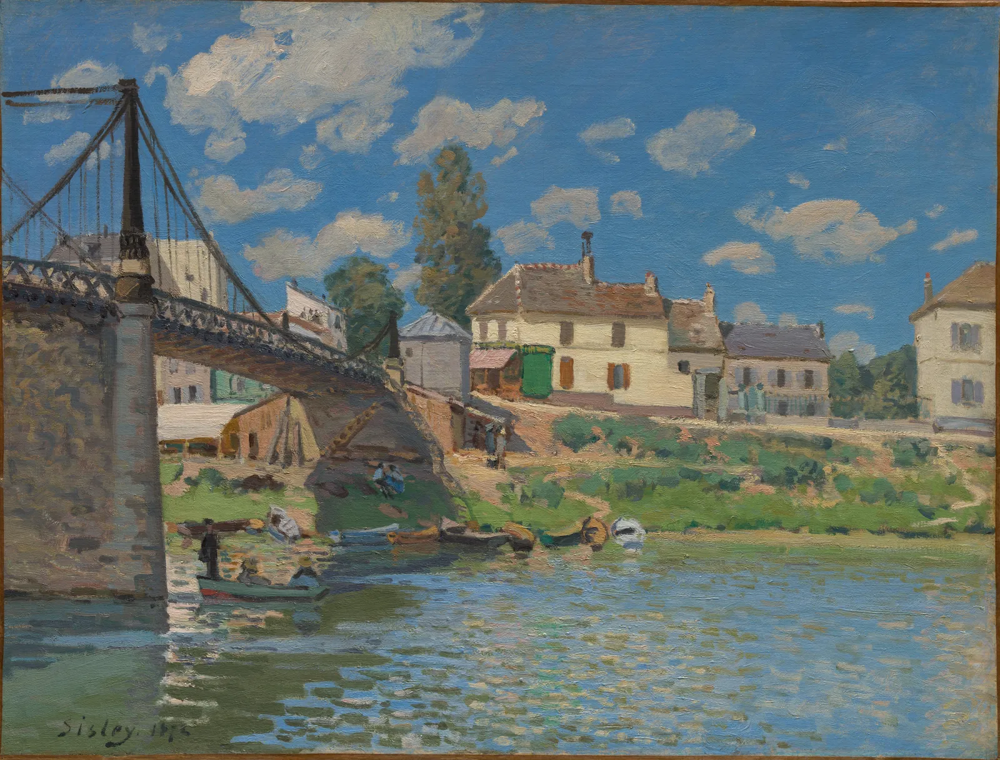
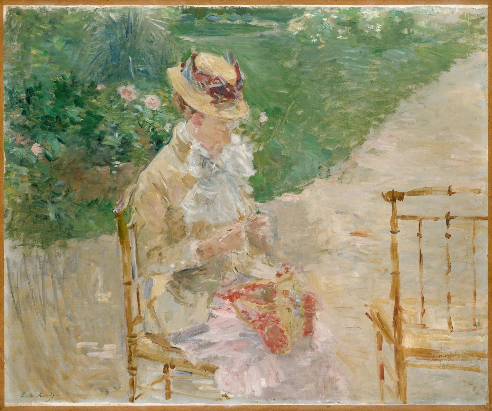
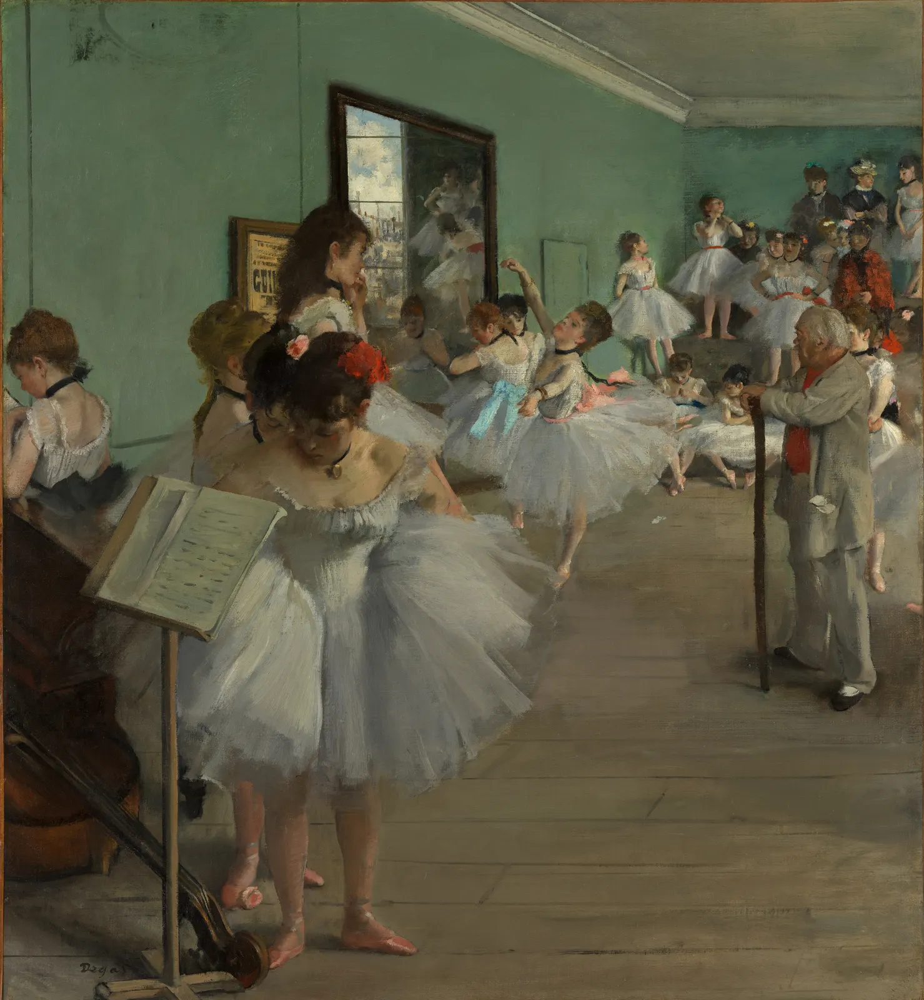
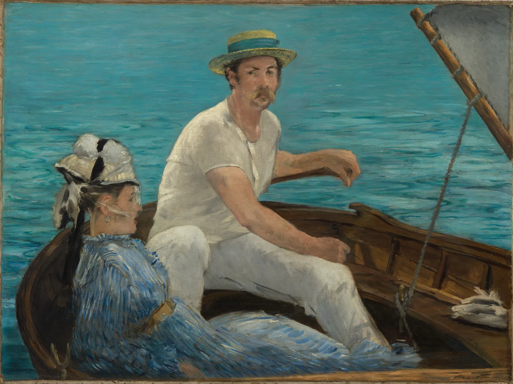

인상주의
맑은 날 흰 벽에 드리운 그림자를 오래 보고 있으면 회색이 아니라 푸르스름한 색이 보인다. 19세기 후반 파리 근교의 강가에서 이젤을 펴고 앉은 젊은 화가들은 이 색을 그리려 했다. 그들은 작업실의 갈색 그늘 대신 하늘빛이 비친 그림자를, 매끈한 마무리 대신 빛이 바뀌기 전에 끝낼 수 있는 짧은 붓질을 택했다. 비평가가 비꼬아 붙인 "인상주의"라는 이름은 그대로 굳었다. 이 장은 그들이 어디서(야외), 무엇으로(튜브 물감과 짧은 붓질), 무엇을(빛과 그림자의 색), 어떻게 잘라(사진과 일본 판화) 그렸는지를 그림과 계산으로 확인한다.
- 야외 사생이 튜브 물감, 휴대용 이젤, 철도 같은 조건 위에서 가능해졌다는 것을 알고, 해가 움직이는 속도를 계산해 본다.
- 짧은 붓질과 분할된 색이 가까이와 멀리에서 어떻게 다르게 보이는지 직접 칠해 비교한다.
- 그림자가 푸르게 보이는 이유를 햇빛과 하늘빛 두 광원과 눈의 순응으로 설명하고, 실제 그림에서 재어 본다.
- 사진과 일본 판화가 화면을 자르는 방식(잘린 인물, 높은 시점, 평평한 면)에 준 영향을 그 한계와 함께 이해한다.
- 1874년 첫 전시가 살롱 바깥의 새로운 전시 방식이었다는 것과, 여성 화가들이 그 중심에 있었다는 것을 안다.
그림자는 무슨 색인가
알프레드 시슬레(Alfred Sisley, 1839–1899)가 1872년에 파리 북쪽 센강 변의 마을에서 그린 그림 한 점을 본다. 쇠줄로 매단 다리, 강가의 집들, 파란 하늘과 흰 구름. 맑은 여름날의 평범한 풍경이다. 눈여겨볼 곳은 다리 아래의 땅이다. 다리가 드리운 그림자는 검정이나 짙은 갈색이 아니라, 햇빛 받은 땅보다 어둡고 덜 노란 차분한 색으로 칠해져 있다. 그 그늘이 무슨 색인지는 이 장의 뒤에서 직접 잰다.

이 그림이 그려진 1870년대에 파리의 공식 전시회인 살롱(Salon)에서 상을 받는 그림은 대개 작업실에서 오랜 시간 다듬은 역사화와 초상화였고, 그늘은 따뜻한 갈색으로 깊게 칠하는 것이 관습이었다(4장의 키아로스쿠로를 떠올리자). 클로드 모네(Claude Monet), 카미유 피사로(Camille Pissarro), 오귀스트 르누아르(Auguste Renoir), 시슬레, 베르트 모리조(Berthe Morisot) 같은 화가들은 그 반대편에서, 야외의 빛 아래 지금 보이는 색을 빠르게 붙잡으려 했다. 훗날 이들을 묶어 인상주의(Impressionism)라고 부른다.
야외로 나간 이젤
풍경을 밖에서 직접 보고 그리는 것을 야외 사생(Plein air, 프랑스어로 "열린 공기")이라고 한다. 야외 습작 자체는 새로운 일이 아니었다. 18세기 말부터 화가들은 이탈리아의 들판에서 작은 유화 습작을 그렸고, 7장의 컨스터블은 구름을, 바르비종의 화가들은 숲을 밖에서 그렸다. 인상주의 화가들이 바꾼 것은 그 습작과 완성작의 경계였다. 밖에서 그린 그림을 그대로, 또는 조금만 손봐서 완성작으로 내놓았다.
여기에는 기술의 도움이 컸다. 그전까지 유화 물감은 화가나 조수가 안료를 기름에 개어 쓰거나, 돼지 방광으로 만든 주머니에 담아 들고 다녔다. 주머니는 바늘로 찔러 짜야 했고, 한번 뚫으면 금방 말라 굳었다. 1841년 런던에서 활동하던 미국인 초상화가 존 고프 랜드(John Goffe Rand)가 마개로 닫는 주석 물감 튜브의 특허를 받았고, 이후 물감 회사들이 튜브에 담은 물감을 팔기 시작했다. 접이식 이젤과 물감 상자, 그리고 파리에서 근교의 강가 마을(아르장퇴유, 부지발, 루브시엔)까지 화가들을 실어 나른 철도도 같은 시기의 일이다. 르누아르가 "튜브 물감이 없었다면 인상주의도 없었다"는 뜻의 말을 했다고 그의 아들이 회고록에 전한다.
밖에서 그리는 화가에게 가장 큰 적은 시간이다. 해는 움직이고, 그림자의 방향과 길이, 빛의 색이 계속 바뀐다. 아래 시뮬레이터는 파리의 위도에서 해의 높이와 방향을 계산한다. 하늘의 해를 끌어 시각을 바꾸고, 건초 더미의 그림자가 어떻게 움직이는지 본다.
해가 움직이는 속도
한낮의 해는 한 시간에 방위가 크게 돌지만 높이는 천천히 바뀌고, 해 질 무렵에는 높이가 빠르게 떨어진다. 그림자의 길이는 해 높이의 탄젠트에 반비례하므로, 해가 낮을수록 같은 시간에 그림자가 훨씬 많이 늘어난다.
모네가 같은 건초 더미나 성당을 시각과 날씨를 바꿔 수십 점씩 그린 연작(Series)은 이 문제에 대한 하나의 답이었다. 캔버스 여러 개를 들고 나가 빛이 바뀌면 다음 캔버스로 옮겨 그렸다고 전해진다. 피사로도 말년에 파리의 호텔 방 창가에서 튈르리 정원을 계절과 시각을 바꿔 여러 점 그렸다. 이 장의 시뮬레이터 아래쪽에서 그 두 점을 다시 만난다.
짧은 붓질과 섞지 않은 색
빛이 바뀌기 전에 그리려면 붓질이 빨라야 한다. 인상주의 화가들은 색을 팔레트에서 오래 섞어 매끈하게 펴는 대신, 짧고 뚜렷한 붓질을 화면에 나란히 얹었다. 서로 다른 색의 붓질을 섞지 않고 놓아 멀리서 눈이 한데 보게 하는 방식을 분할된 색(Broken color)이라고 부른다. 붓질은 대상의 결을 따르기도 한다. 시슬레의 물은 가로로, 모리조의 풀과 옷은 비스듬한 지그재그로 칠해졌다.

아래 시뮬레이터의 왼쪽은 이 책이 그린 가상의 바닷가 풍경을 매끈하게 칠한 것이고, 오른쪽은 같은 풍경을 짧은 붓질로 다시 칠한 것이다. 붓질의 길이와 색의 흔들림을 바꾸고, 경계선을 끌어 비교한다. "멀리서 보기"는 화면을 흐리게 해서 몇 걸음 물러난 눈을 흉내 낸다.
짧은 붓질로 다시 칠하기
멀리서 볼 때 분할된 색의 평균은 원래 색과 거의 같다. 그래서 "색을 섞지 않고 나란히 놓는다"는 것은 다른 색을 만드는 기술이라기보다 같은 색을 다르게 보이게 하는 기술이다. 가까이서는 붓질마다 다른 색이 살아 있고, 멀리서는 그것들이 모여 하나의 색이 되며, 그 사이의 거리에서 표면이 반짝이는 듯 떨린다(ColorBook 11장의 피사로 돋보기). 다만 흔들림이 지나치면 반대편 색끼리 상쇄되어 오히려 탁해진다. 화가들이 붓질마다 색을 고르는 데 공을 들인 이유다.
색 그림자: 햇빛과 하늘빛
맑은 날 바깥에는 광원이 둘 있다. 하나는 해에서 곧장 오는 직사광, 다른 하나는 하늘 전체에서 고르게 오는 하늘빛이다. 하늘이 파란 것은 대기가 파장이 짧은 빛을 더 많이 흩뜨리기 때문이고, 그래서 하늘빛은 파란 쪽으로 치우쳐 있다. 햇빛 받는 곳은 두 빛을 다 받지만, 그림자 속은 해가 가려져 하늘빛만 받는다. 게다가 우리 눈은 넓은 장면의 주된 빛(햇빛 섞인 흰색)에 순응해 그것을 "흰색"으로 맞추므로, 하늘빛만 받는 그림자는 상대적으로 더 파랗게 보인다(ColorBook 10장). 그림자 속에 보이는 이런 색을 흔히 색 그림자(Colored shadow)라고 부른다.
아래 시뮬레이터는 이 두 빛을 단순한 모형으로 섞는다. 햇빛의 색온도와 하늘빛의 세기를 바꾸고, 눈의 순응을 켜고 끄며 흰 눈밭과 상자의 그림자 색을 본다.
햇빛과 하늘빛으로 칠한 그림자
모형에서 그림자가 푸른 이유는 두 가지가 겹친 결과다. 그림자 속 빛 자체가 하늘빛이라 파랗고, 눈이 햇빛에 순응해 그 파랑을 더 두드러지게 한다. 해 질 녘에는 햇빛이 주황으로 기울어 그 대비가 가장 커지고, 흐린 날에는 직사광이 없어 그림자가 거의 사라진다. 그렇다면 화가들은 실제로 그림자를 어떻게 칠했을까. 아래에서 그림 위에 두 개의 측정점을 끌어 놓고 햇빛 쪽과 그림자 쪽의 색을 잰다.
그림 속 그림자 재기
측정이 보여 주는 것은 교과서의 "인상주의 그림자는 파랗다"보다 조금 섬세하다. 화가들은 그림자를 대개 더 어둡고 덜 노랗게 칠했고, 몇몇 자리에서만 분명한 파랑까지 밀었다. 그리고 흐린 날의 그림에서는 그림자 자체가 거의 없다. 그들이 그린 것은 정해진 공식("그림자는 보라")이 아니라 그날의 빛이었다. 다만 이 측정은 촬영된 이미지와 백 년 넘은 바니시를 거친 값이라는 점을 잊지 않는다.
사진과 잘린 화면
1839년 공개된 사진은 19세기 중반 화가들에게 경쟁자이자 참고 자료였다. 귀스타브 르 그레(Gustave Le Gray, 1820–1884)는 1850년대에 바다와 하늘을 한 장에 담은 사진으로 이름을 얻었다. 당시의 사진 재료는 밝은 하늘과 어두운 바다를 한 번의 노출로 함께 담기 어려웠고, 르 그레의 바다 사진 가운데 일부는 하늘과 바다를 따로 찍은 두 음화를 합쳐 인화한 것으로 알려져 있다.


에드가 드가(Edgar Degas, 1834–1917)의 화면은 자주 "스냅숏 같다"고 말해진다. 인물이 가장자리에 걸려 잘리고, 주인공이 가운데에 없으며, 시점이 높거나 비스듬하다. 그런데 이 비유에는 조심할 점이 있다. 1870년대의 사진은 아직 노출 시간이 길어서, 움직이는 사람을 우연히 잘라 찍은 스냅숏은 흔하지 않았다. 순간 사진이 널리 퍼진 것은 1880년대 이후의 일이다. 드가의 화면은 작업실에서 습작을 조합해 계획한 것이고, 사진을 닮았다기보다 사진이 나중에 보여 줄 눈을 앞서 짠 것에 가깝다. 드가 자신은 1890년대에 사진기를 들고 직접 사진을 찍기도 했다.
아래 시뮬레이터에서 이 책이 그린 넓은 강가 장면 위로 프레임을 끌어 본다. 주인공을 가운데에 둔 안정된 화면과, 인물을 가장자리에서 자른 화면이 어떻게 다르게 읽히는지 본다.
프레임으로 자르기
일본 판화: 평평한 면과 높은 시점
1850년대 후반 일본이 개항하면서 우키요에 목판화와 공예품이 유럽에 대량으로 들어왔다. 1867년 파리 만국박람회에는 일본관이 섰고, 파리의 상점에서 판화를 구할 수 있게 되었다. 일본 미술에 대한 유럽의 열광을 1870년대 초부터 자포니즘(Japonisme)이라고 불렀다. 화가들이 판화에서 본 것은 이국적인 소재만이 아니었다. 그림자 없이 평평하게 칠한 색면, 또렷한 윤곽, 높은 데서 내려다보는 시점, 화면을 가로지르며 잘리는 다리와 나무가 그들의 화면을 바꿨다(12장).


에두아르 마네(Édouard Manet, 1832–1883)는 인상주의 전시회에 한 번도 작품을 내지 않았지만, 젊은 화가들이 따르던 선배였다. 1874년 여름 아르장퇴유에서 그린 「뱃놀이」에는 이 장의 여러 주제가 한꺼번에 들어 있다. 야외의 밝은 빛, 그늘진 흰 옷의 차가운 색, 그리고 수평선 없이 화면을 채운 강물. 히로시게의 판화와 나란히 놓으면 둘 다 "멀리 있는 것"을 지우고 가까운 것을 평평한 면 위에 비스듬히 놓았다는 점이 보인다.
그러나 "일본 판화의 영향"을 한 방향의 흐름으로만 읽으면 절반을 놓친다. 히로시게의 「명소 에도 백경」은 에도 시대에 들어온 서양식 투시도법(우키에)을 소화한 위에서 나온 그림이고, 일본 판화가는 그 나름의 목적(명소를 사는 사람들의 즐거움, 계절감)을 위해 화면을 잘랐다. 유럽 화가들은 그 화면을 자기 문제를 푸는 데 맞게 다시 읽었다. 영향은 베끼기가 아니라 번역이었고, 양쪽 모두 상대를 자기 식으로 이해했다. 판화 자체의 공정과 구도는 12장에서 동아시아 미술의 자리에서 다시 본다.
살롱 밖의 전시
1874년 4월, 살롱에서 거듭 낙선하거나 살롱의 방식에 불만을 품은 화가 서른 명이 파리 카퓌신 대로 35번지, 사진가 나다르(Nadar)가 쓰던 작업실 건물에서 함께 전시를 열었다. 심사도 상도 없이, 회원들이 비용을 대고 작품을 걸었다. 풍자 신문 『르 샤리바리』의 비평가 루이 르루아(Louis Leroy)가 모네의 「인상, 해돋이」 제목을 비꼬아 이들을 "인상주의자들"이라 부른 글을 썼고, 화가들은 몇 년 뒤 이 이름을 스스로 받아들였다. 이 그룹 전시는 1886년까지 여덟 번 열렸다.
| 화가 | 이 장의 그림 | 여덟 번의 그룹 전시와의 관계 |
|---|---|---|
| 카미유 피사로 | 「튈르리 정원, 겨울 오후」(1899) | 여덟 번 모두 참여한 유일한 화가 |
| 베르트 모리조 | 「뜨개질하는 젊은 여인」(1883년경) | 1879년을 빼고 일곱 번 참여 |
| 에드가 드가 | 「무용 수업」(1874) | 창립 회원, 대부분의 전시에 참여 |
| 알프레드 시슬레 | 「빌뇌브라가렌의 다리」(1872) | 첫 전시부터 참여(국적은 영국, 평생 프랑스에서 활동) |
| 오귀스트 르누아르 | 「바닷가에서」(1883, 아래 실험실) | 초기 전시에 참여, 뒤에는 살롱으로 돌아가기도 했다 |
| 에두아르 마네 | 「뱃놀이」(1874) | 한 번도 참여하지 않고 살롱에 계속 출품 |
이 표에서 눈여겨볼 사람은 모리조다. 19세기 파리에서 여성은 국립 미술학교에 들어갈 수 없었고, 혼자 카페나 거리에서 그림을 그리기도 어려웠다. 모리조의 그림이 정원, 발코니, 실내처럼 가까운 공간을 자주 담은 데에는 그런 조건이 있었다. 그런데도 그녀는 그룹 전시의 거의 모든 회차에 참여한 핵심 화가였고, 그녀의 빠르고 열린 붓질은 동료들보다 더 대담하다는 평을 받았다. 1879년부터는 미국인 메리 커샛(Mary Cassatt)도 참여했다. 인상주의를 "남성 화가들의 운동에 여성이 끼어든 것"으로 읽는 것은 사실과 다르다.
마지막으로 이 장의 도구를 모은다. 아래 실험실은 모임 7회차의 무대, 책방 E 앞 골목을 가상으로 꾸민 것이다. 날짜는 2027년 10월 16일 토요일, 장소는 서울의 위도와 경도다. 시계를 움직이고 골목의 방향을 바꾸며 그림자가 골목 바닥의 어디까지 오는지, 그림자가 무슨 색일지 본다.
골목 야외 사생 실험실
그림 읽기 모임
7회차, 골목에서 10분
7회차는 10월 16일 토요일이다. 이번 회차의 중심은 화면이 아니라 책방 앞 골목이다. 서윤의 첫 계획은 "밖에 나가서 10분 동안 아무거나 그려 오기"였다. 도경이 고개를 저었다. "아무거나 그리면 다들 간판 글씨만 그리고 와. 이 회차의 질문은 하나야. 그림자는 무슨 색인가." 두 사람은 활동을 그 질문 하나에 맞춰 다시 짰다.
먼저 빛의 조건을 확인했다. 모임은 저녁이라 해가 질 무렵과 겹친다. 이 장의 실험실로 계산하면 그날 서울의 일몰은 17시 55분 무렵이고, 17시 25분에 해의 높이는 약 4.9°, 17시 35분에는 약 3.0°다. 그 10분 사이에 높이 1 m 입간판의 그림자는 약 11.6 m에서 약 19.1 m로 늘어난다. 해가 이렇게 낮으면 골목 바닥은 대부분 건물 그림자 속이고, 해가 진 뒤에는 그림자 자체가 없다. 서윤은 모임 시작 시각을 바꾸지 않기로 하고, 대신 활동을 두 갈래로 준비했다. 해가 남아 있으면 햇빛과 하늘빛의 그림자를, 해가 진 뒤면 가게 불빛과 남은 하늘빛의 그림자를 그린다. 어느 쪽이든 광원이 둘이라 질문은 같다. 골목의 방향은 당일 서윤이 휴대전화 나침반으로 재서 실험실에 넣고, 해가 골목 안으로 드는지 미리 보여 주기로 했다.
정 선생님이 미리 물었다. "그림자를 파랗게 칠하는 건 인상파 화가들이 정한 규칙 아니에요?" 대학생 단골은 "사진으로 찍어서 보면 안 돼요?"라고 물었다. 도경은 두 질문을 활동의 끝에 두자고 했다. 직접 본 색, 사진에 찍힌 색, 그림 속 색을 나란히 놓으면 답이 저절로 나온다는 것이다.
| 순서 | 시간 | 활동 | 준비물·방법 |
|---|---|---|---|
| 1 | 5분 | 실내에서 시슬레 「다리」의 그림자를 측정점으로 보여 주기 | 이 장의 "그림 속 그림자 재기", 해 점과 그늘 점의 b 비교 |
| 2 | 2분 | 골목에서 구멍 카드로 보기 | 지름 1 cm 구멍을 뚫은 회색 카드. 바닥에 흰 종이를 깔고 입간판의 그림자와 햇빛(또는 등빛) 쪽을 번갈아 본다 |
| 3 | 10분 | 사생 | 엽서 크기 회색 종이, 색연필 세 자루(파랑, 주황, 흰색). 그릴 것은 입간판 하나와 그 그림자로 정한다. 그림자부터 칠한다 |
| 4 | 1분 | 사진 한 장 | 같은 자리를 휴대전화로 찍는다(자동 화이트밸런스 그대로) |
| 5 | 15분 | 실내에서 나란히 놓기 | 내 그림, 내 사진, 시슬레·마네의 그림자를 한 탁자에. "그림자는 무슨 색이었나"를 각자 한 단어로 |
비가 오면 골목 대신 창가에서 한다. 창으로 들어오는 하늘빛과 탁상등의 따뜻한 빛을 함께 켜고 흰 종이 위의 컵 그림자 두 개를 본다. 도경이 노트에 덧붙였다. "규칙을 외우게 하지 말고, 10분 동안 보게 하자. 파랗게 보이면 파랗게, 아니면 아니게."
핵심 정리
- 야외 사생은 새로운 일이 아니었지만, 인상주의는 밖에서 그린 그림을 완성작으로 내놓았다. 튜브 물감(1841년 특허), 휴대용 이젤, 철도가 그 조건이었다.
- 그림자 길이는 해 높이의 탄젠트에 반비례한다. 해가 낮을수록 같은 10분 동안 빛과 그림자가 크게 바뀌어, 해 질 녘의 사생은 시간과의 싸움이다.
- 분할된 색은 서로 다른 색의 짧은 붓질을 나란히 놓는 것이다. 멀리서는 평균색이 되고 가까이서는 떨린다. 붓질이 대상보다 크거나 흔들림이 지나치면 형태와 선명함이 무너진다.
- 색 그림자는 그림자 속에 하늘빛만 들어오는 물리적 원인과 눈의 순응·동시 대비라는 지각적 원인이 겹친 결과다. 해 질 녘에 가장 뚜렷하고 흐린 날에는 사라진다.
- 실제 그림에서 그림자는 대개 "더 어둡고 덜 노란" 쪽으로 칠해졌고, 분명한 파랑은 일부다. 화가들은 공식보다 그날의 빛을 그렸다.
- 잘린 인물, 높은 시점, 평평한 면은 사진과 일본 판화와 함께 이야기되지만, 1870년대의 사진 기술과 판화의 자체 맥락을 함께 봐야 한다. 영향은 베끼기가 아니라 번역이다.
- 1874년의 첫 그룹 전시는 살롱 밖의 자율적인 전시였고, 모리조처럼 여성 화가들이 그 중심에 있었다.
확인 퀴즈
1. 맑은 날 해 질 녘에 흰 벽의 그림자가 특히 푸르게 보이는 이유로 가장 알맞은 것은?
2. 해의 높이가 45°에서 10°로 낮아졌다. 높이 1 m 기둥의 그림자 길이는 대략 어떻게 되는가?
3. 짧은 붓질 시뮬레이터에서 색의 흔들림을 크게 올렸더니 가까이서는 시끄럽고 멀리서는 오히려 탁해졌다. 가장 알맞은 설명은?
4. 1874년 첫 인상주의 그룹 전시에 대한 설명으로 옳은 것은?